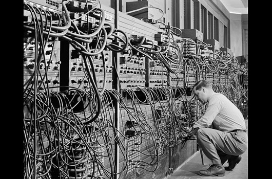
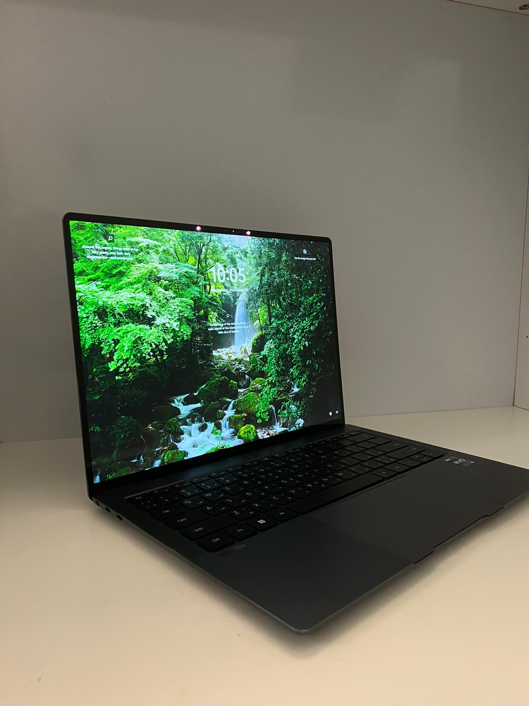
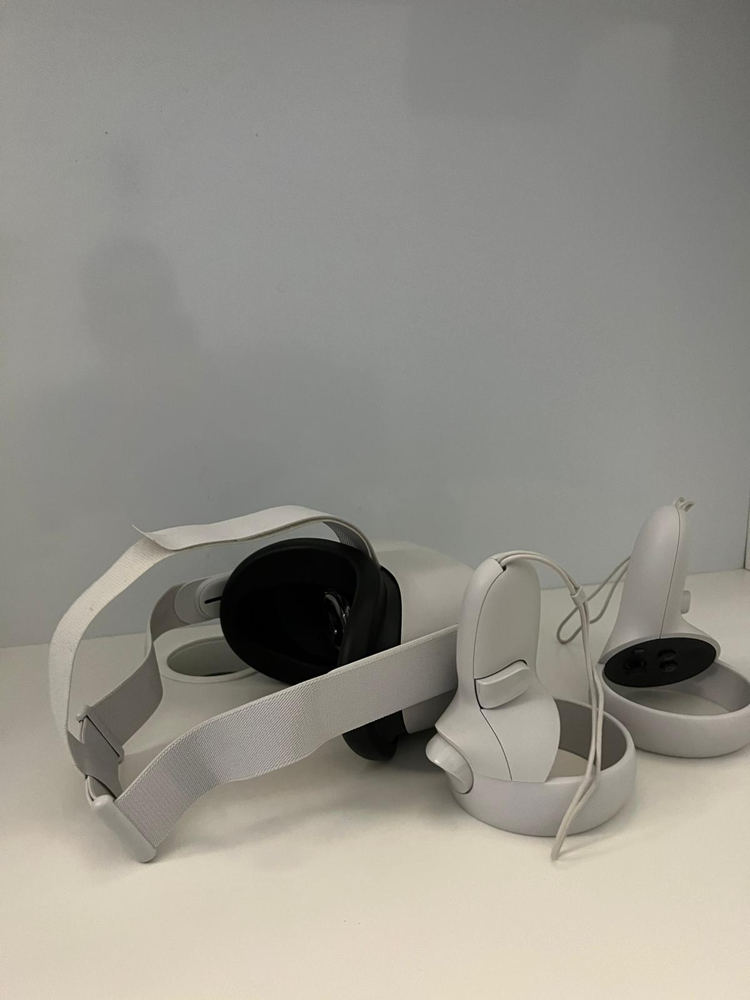

Computers Evolution
Computers arent a modern techonlogy, they were invented 2 century ago. At that time they were not the computers we have today, they were for calculation only, it was until the 20th century that computers started getting better
1st Generation
1940-1956
The first generation is where moderen computers we use now started, They were bigger, heavier and more expensive, The components were diffrent to, it used vaccum tubes and magnetic drums(Its like the ram we use now but bigger and with magnets.). They were slow and keeps on overheating that lead to the computer crashing and malfunctioning. It use to print out the display and inputs were based on punched cards
2nd Generation
1956-1963
Computers became smaller in size, it used less energy, the cost of building one dropped, calculated data faster and most importantly less heat

3rd Generation
1964-1971
one of the biggest changes happened in this generation, computer chips was invented and this was huge for the computer indistry. keyboards were invented to driectly input the data unline the fisrt generation that used punched paper and the output was displayed in a monitor. operating systems were added too that could run diffrent applications

4th Generation
1971-2010
CPU's were inveted and made computers small and could fit on desks(thats how they got the name desktop). It also made computers so small that they made them portable(Laptops). this techology was so advance when they created it that we use it till this day.
5th Generation
2010-present
the start of AI(Artificial Intelligence) and VR(Virtual reality) were introduced in this generation. computers started using AI like alexa and siri to help us with just our voices. VR would take us to another dimension with just a headset
6th Generation
The Future
Can you imagine what the future would be like?
The future would use quantum computer. you may ask "what is a quantum computer?" well im here to answer it.
Quantum Computining is a new way for solving problems they arent your typical modern day computer, it could solve problems that the modern day computer cant solve. They dont use just binary bit(0 or 1), it uses qubit which the 0 is 0 or 1 and the 1 is 0 or 1
Example:Imagine a penny that is a bit, a penny has a heads and tails lets just say the heads is 0 and tails is 1, now imagine having two pennies and spinning them the computer could choose what side each penny lands on this is qubit